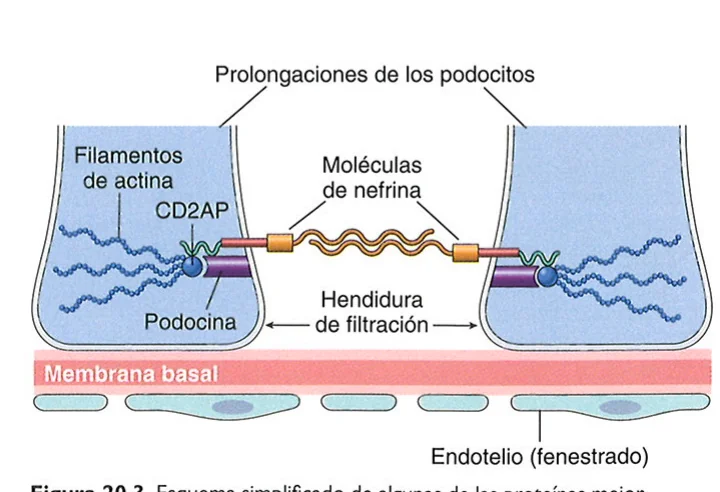
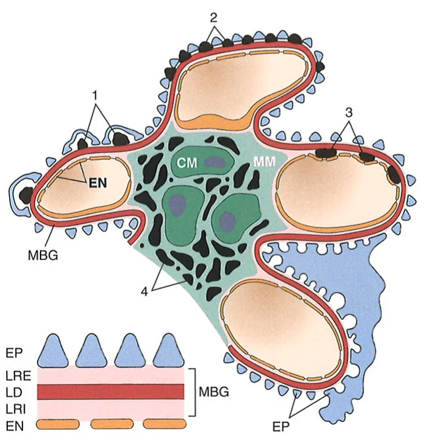
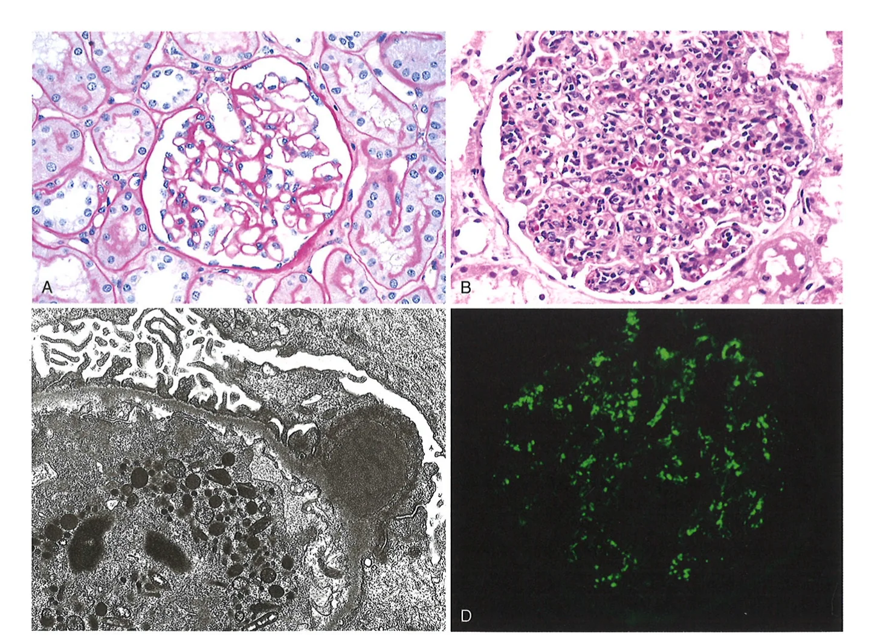
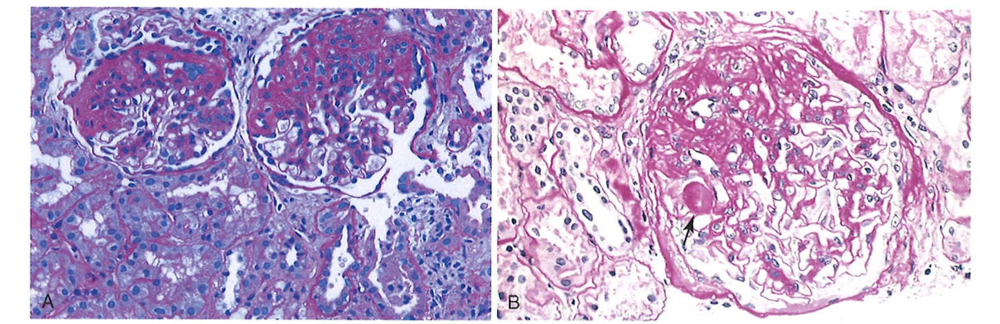
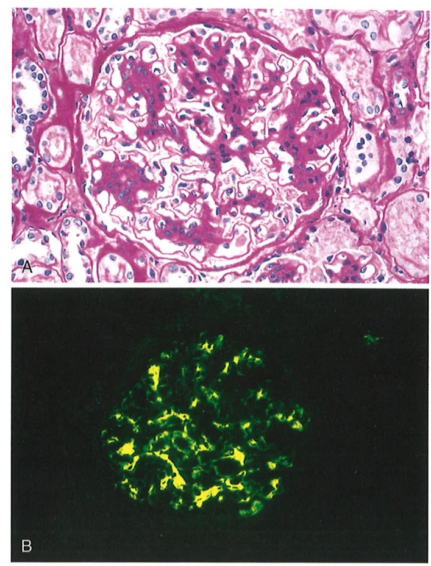
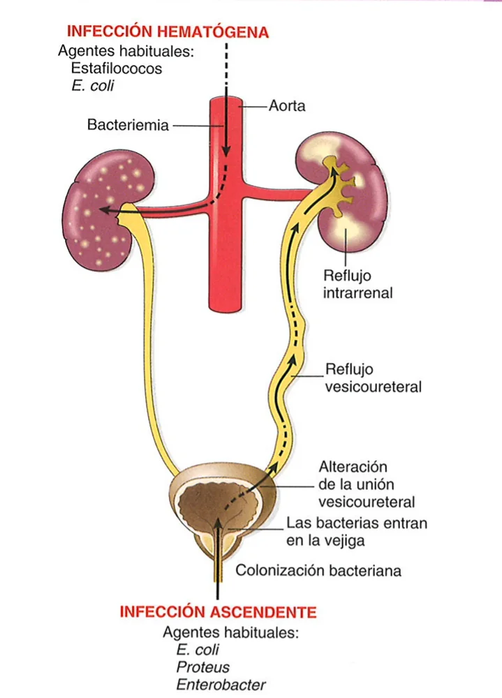
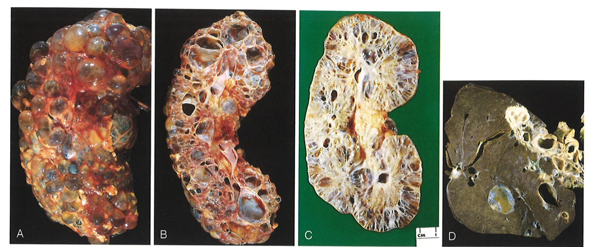
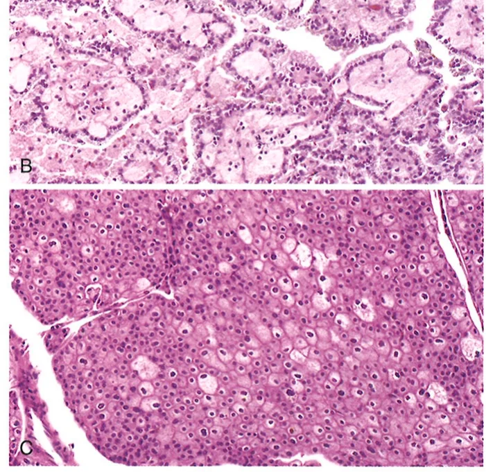

Qué cubre esta guía
Las citas p. N corresponden a la página impresa del libro. El texto se contrastó con el OCR del capítulo.
Lo esencial en 60 segundos
- El filtro glomerular (endotelio fenestrado, MBG con lámina densa y podocitos con nefrina-podocina) es la diana de las podocitopatías; su lesión produce proteinuria p. 898-900.
- La glomerulonefritis postestreptocócica causa síndrome nefrítico con jorobas subepiteliales y C3 bajo 1-4 semanas tras faringitis o impétigo; más del 95% de los niños se recupera p. 907-909.
- En el síndrome nefrótico, los niños presentan cambios mínimos (75%) y los adultos GEFS (35%) o nefropatía membranosa anti-PLA2R (30%) p. 912.
- La nefropatía IgA, glomerulonefritis más frecuente del mundo, se diagnostica solo por depósitos mesangiales de IgA y causa hematuria de repetición postinfecciosa p. 920-921.
- La pielonefritis aguda es supurativa por vía ascendente (E. coli, reflujo vesicoureteral); la crónica deja cicatrices polares con cálices amputados y tiroidización tubular p. 927-931.
- El carcinoma de células claras (70-80% de los cánceres renales) inactiva el gen VHL con estabilización de HIF-1, invade la vena renal y metastatiza a pulmón y hueso antes de dar síntomas locales p. 949-951.
Ideas clave
- Los riñones filtran más de 1.700 L de sangre/día en 1 L de orina; son además órgano endocrino (eritropoyetina, renina, prostaglandinas) y regulan el metabolismo de la vitamina D p. 896.
- La enfermedad renal crónica afecta al 11% de los adultos en EE. UU.; sus causas principales son diabetes e hipertensión; en la nefropatía terminal el FG es <5% del normal p. 897.
- El filtro glomerular consta de endotelio fenestrado (fenestraciones de 70-100 nm), MBG con lámina densa y podocitos unidos por hendiduras de filtración de 20-30 nm con nefrina y podocina; las mutaciones de estas proteínas causan síndrome nefrótico hereditario p. 898-900.
- Las respuestas glomerulares a la lesión son hipercelularidad, engrosamiento de la MBG, hialinosis y esclerosis; la lesión de los podocitos es el denominador común de la proteinuria p. 900, 905.
- La mayor parte de las glomerulonefritis es inmunomediada: por inmunocomplejos circulantes, por formación in situ (anti-MBG lineal, PLA2R membranosa) o por desregulación de la vía alternativa del complemento (enfermedad por depósitos densos, SHU atípico) p. 901-903, 918-919, 938.
- En el síndrome nefrótico, niños: enfermedad con cambios mínimos (75%); adultos: nefropatía membranosa (30%) y GEFS (35%), hoy la primera causa en adultos en EE. UU. p. 912.
- La nefropatía IgA es la glomerulonefritis más frecuente del mundo: depósitos mesangiales de IgA1 con glucosilación aberrante, hematuria de repetición sincronizada con infecciones respiratorias p. 920-921.
- La LTA es la causa más frecuente de lesión renal aguda hospitalaria (50% de los casos), por isquemia o toxinas; reversible si se elimina la causa p. 924.
- La pielonefritis aguda es supurativa, por vía ascendente (E. coli, reflujo vesicoureteral) más que hematógena; la crónica deja cicatrices polares con cálices amputados p. 927-930.
- Las microangiopatías trombóticas comparten trombos microvasculares con anemia hemolítica microangiopática y trombocitopenia: SHU típico (toxina Shiga de E. coli O157:H7), SHU atípico (desregulación del complemento, factor H) y PTT (deficiencia de ADAMTS13) p. 937-939.
- La nefropatía poliquística autosómica dominante (PKD1, PKD2) es una ciliopatía: 1/400-1.000 nacidos vivos y 5-10% de las nefropatías terminales; se asocia a quistes hepáticos y aneurismas del polígono de Willis p. 941-943.
- El carcinoma de células renales (85% de los cánceres renales del adulto) se relaciona con el tabaco y con el gen VHL en el subtipo de células claras (70-80%); metastatiza precozmente a pulmón y hueso p. 949-951.
Introducción y manifestaciones clínicas de las nefropatías
Los riñones convierten más de 1.700 L de sangre al día en 1 L de orina concentrada; excretan residuos del metabolismo, regulan agua, sal, calcio, fósforo y el balance ácido-básico, y secretan eritropoyetina, renina y prostaglandinas p. 896. En EE. UU. más de 660.000 personas padecían nefropatía terminal (dos tercios en diálisis, con un coste de ~72.000 dólares por persona al año); la mortalidad a 1 año de la nefropatía terminal supera la de la mayoría de los cánceres de nuevo diagnóstico p. 896. La enfermedad renal crónica afecta al 11% de los adultos, con predominio en ancianos, y resulta sobre todo de diabetes e hipertensión p. 897.
Los trastornos renales se agrupan clínicamente por el componente afectado: p. 896-897.
- Glomerulares: síndromes nefrótico, nefrítico, GN rápidamente progresiva y anomalías urinarias aisladas p. 896-897.
- Tubulares: poliuria, nicturia y trastornos electrolíticos (acidosis metabólica); de causa hereditaria (diabetes nefrógena, cistinuria, acidosis tubular renal) o adquirida (nefropatía por plomo) p. 896-897.
- Obstrucción y tumores: manifestaciones según la localización anatómica.
- Infección urinaria: bacteriuria y piuria; riñón (pielonefritis) o vejiga (cistitis) p. 896-897.
- Nefrolitiasis: cólico renal y hematuria, con recurrencia frecuente.
La azoemia es la manifestación bioquímica de la lesión renal (↑BUN o creatinina) y refleja reducción del FG; la lesión renal aguda es reversible o evoluciona a enfermedad renal crónica, habitualmente irreversible p. 897. La uremia produce alteraciones sistémicas difusas: edema, hiperpotasemia, acidosis metabólica, hiperfosfatemia con hipocalcemia e hiperparatiroidismo secundario y osteodistrofia renal, anemia y diátesis hemorrágica, hipertensión, insuficiencia cardiaca congestiva, pericarditis urémica, náuseas, vómitos y hemorragia digestiva, miopatía, neuropatía periférica y encefalopatía, y prurito con color cetrino de la piel p. 897 (tabla 20.1).
Glomerulopatías: estructura, respuestas y mecanismos
Las glomerulopatías son primarias (el riñón es el único o principal órgano afectado) o secundarias a enfermedades sistémicas: LES, hipertensión, diabetes, amiloidosis, enfermedad de Fabry, vasculitis p. 897. Los glomérulos son redes de capilares con endotelio fenestrado rodeadas por dos capas epiteliales: la visceral (podocitos), incorporada a la pared capilar, y la parietal de la cápsula de Bowman, que reviste el espacio urinario p. 898.
El filtro glomerular
La pared del capilar glomerular, la membrana de filtración, está formada por: p. 898.
- Endotelio fenestrado con fenestraciones de 70-100 nm.
- MBG con lámina densa central y láminas raras interna y externa; contiene colágeno de tipo IV (red de triple hélice con cadenas α3-α5, dominios 7S y NC1), laminina, proteoglucanos polianiónicos (sulfato de heparano, perlecano), fibronectina y entactina. El dominio NC1 es la diana de los anticuerpos anti-MBG; los defectos genéticos de las cadenas α son la base de las nefritis hereditarias; el contenido de proteoglucanos determina la permeabilidad (carga) p. 898.
- Podocitos: pedicelos separados por hendiduras de filtración de 20-30 nm, cerradas por un diafragma cuyas moléculas de nefrina forman dímeros entre podocitos vecinos y se anclan a la podocina, la CD2AP y el citoesqueleto de actina p. 900. Las mutaciones de estas proteínas alteran la permeabilidad y causan síndrome nefrótico p. 900.
- El ovillo se apoya en el mesangio: células mesangiales contráctiles, fagocíticas y capaces de producir matriz, citocinas y derivados del ácido araquidónico p. 898.


Respuestas patológicas del glomérulo a la lesión
- Hipercelularidad: proliferación de células mesangiales y endoteliales más aflujo de leucocitos; puede obliterar la luz capilar p. 900.
- Engrosamiento de la MBG por depósito de proteínas de matriz o inmunocomplejos subendoteliales o subepiteliales p. 900.
- Hialinosis y esclerosis: depósito de proteínas plasmáticas hialinas y acumulación de matriz; término final de muchas lesiones p. 900.
- Distribución de las lesiones: difusa (todos los glomérulos), global (todo el glomérulo), focal (parte de los glomérulos), segmentaria (parte de cada glomérulo) p. 901.
Patogenia: depósito de anticuerpos
La mayoría de las glomerulopatías primarias y muchas secundarias son inmunomediadas p. 901. Tres vías principales: p. 901-904.
- Inmunocomplejos circulantes: complejos antígeno-anticuerpo atrapados en los glomérulos por sus propiedades fisicoquímicas y factores hemodinámicos; los anticuerpos no son específicos para el glomérulo. Antígenos endógenos (ADN en el LES, IgA) o exógenos (proteínas estreptocócicas, HBsAg, antígenos de VHC, T. pallidum, P. falciparum, antígenos tumorales); muchas veces el antígeno es desconocido p. 903.
- Formación in situ: anticuerpos contra componentes normales de la MBG (enfermedad anti-MBG, depósitos lineales) o contra antígenos implantados o propios del podocito (nefritis de Heymann, PLA2R en la nefropatía membranosa) p. 901, 903.
- Desregulación de la vía alternativa del complemento sin anticuerpos: enfermedad por depósitos densos y glomerulopatías por C3, SHU atípico p. 905, 918, 938.


Ambos mecanismos de depósito pueden coexistir, pues los complejos circulantes atrapados inducen formación in situ de más complejos; los virus de la hepatitis B y C pueden producir patrón membranoso (depósito subepitelial in situ) o membranoproliferativo (subendotelial o circulante) p. 904.
Mediadores de la lesión glomerular
- Células: neutrófilos y monocitos reclutados por C5a y receptores Fc liberan proteasas (degradan la MBG), radicales libres y eicosanoides (↓FG); macrófagos y linfocitos T activados; plaquetas que se agregan y liberan eicosanoides y factores de crecimiento; células mesangiales residentes que producen ERO, citocinas, quimiocinas y factores de crecimiento p. 904-905.
- Mediadores solubles: el complemento activado (C5a quimiotáctico; C5b-C9, complejo de ataque a membrana) causa lisis y estimula a las células mesangiales; el C5b-C9 puede producir proteinuria sin neutrófilos, como en la glomerulopatía membranosa experimental p. 905. IL-1 y TNF favorecen la adhesión leucocitaria; quimiocinas reclutan monocitos; PDGF induce proliferación mesangial; TGF-β es esencial para el depósito de matriz y la glomeruloesclerosis; VEGF mantiene la integridad endotelial; la trombina estimula la formación de semilunas p. 905.
- Inmunidad celular: los linfocitos T sensibilizados participan en algunas formas (semilunas experimentales anti-MBG), pero la lesión humana no es principalmente linfocitaria p. 904.
Podocitopatías y mecanismos de progresión
La lesión de los podocitos (borramiento, vacuolización, retracción, desprendimiento) es común a muchas glomerulopatías y determina la proteinuria; los podocitos tienen escasa capacidad replicativa y su pérdida es típica de la GEFS y la nefropatía diabética p. 905. Pueden ser causadas por anticuerpos, toxinas, citocinas, infecciones (VIH) o factores circulantes mal definidos (cambios mínimos, GEFS) p. 905.
Una vez que cualquier nefropatía reduce el FG al 30-50% de lo normal, la progresión a la insuficiencia terminal avanza a velocidad constante, independiente de la lesión original; las dos características histológicas del daño progresivo son la GEFS y la fibrosis tubulointersticial p. 906. La correlación entre función renal y extensión del daño tubulointersticial es mayor que con la intensidad de la lesión glomerular; la isquemia de túbulos distales de glomérulos escleróticos, la inflamación del capilar peritubular y la proteinuria lesionan directamente el epitelio tubular p. 906.
Síndromes glomerulares
Los cinco síndromes glomerulares mayores son p. 897 (tabla 20.3):
| Síndrome | Manifestaciones |
|---|---|
| Síndrome nefrítico | Hematuria, azoemia, proteinuria variable, oliguria, edema e hipertensión |
| Glomerulonefritis rápidamente progresiva | Nefritis aguda, proteinuria e insuficiencia renal aguda |
| Síndrome nefrótico | Proteinuria >3,5 g/día, hipoalbuminemia, hiperlipidemia, lipiduria |
| Enfermedad renal crónica | Azoemia y uremia que evoluciona durante meses o años |
| Anomalías urinarias aisladas | Hematuria glomerular o proteinuria subnefrótica |
Fuente: p. 897 (tabla 20.3).
Síndrome nefrítico y glomerulonefritis proliferativas
Glomerulonefritis postinfecciosa (aguda proliferativa)
El prototipo con antígenos exógenos es la glomerulonefritis postestreptocócica; la nefritis del LES ejemplifica los antígenos endógenos. Las infecciones más frecuentes son estreptocócicas; aparece entre 1 y 4 semanas después de una infección faríngea o cutánea (impétigo); es más común en niños de 6-10 años y está disminuyendo en EE. UU. aunque sigue frecuente en el mundo p. 907.


- Solo cepas nefritógenas de estreptococos β-hemolíticos del grupo A causan nefritis; en >90% de los casos se identifican los tipos 12, 4 y 1 por la proteína M p. 907.
- Evidencias inmunológicas: latencia compatible con la formación de anticuerpos, títulos elevados de anticuerpos ant estreptocócicos, complemento sérico bajo por consumo y depósitos granulares de inmunocomplejos p. 908. El antígeno más probable es la exotoxina B estreptocócica, que activa directamente el complemento y se localiza en las "jorobas" p. 908.
- Los antígenos se implantan primero en localizaciones subendoteliales, forman complejos in situ, y luego estos se disocian, atraviesan la MBG y se reconstituyen en el lado subepitelial; también pueden contribuir inmunocomplejos circulantes p. 908.
- Formas esporádicas similares se asocian a infecciones bacterianas (endocarditis estafilocócica, neumonía neumocócica, meningococcemia), víricas (hepatitis B y C, parotiditis, VIH, varicela, mononucleosis) y parasitarias (paludismo, toxoplasmosis) p. 908.
Morfología: glomérulos agrandados e hipercelulares por infiltración leucocítica (neutrófilos y monocitos), proliferación endotelial y mesangial y, en casos graves, semilunas; proliferación global y difusa p. 908. La luz capilar queda obliterada; hay cilindros hemáticos tubulares p. 909. Inmunofluorescencia: depósitos granulares de IgG y C3 en mesangio y MBG p. 909. Microscopía electrónica: depósitos electrodensos subepiteliales en "jorobas", con depósitos subendoteliales, mesangiales e intramembranosos precoces p. 909.
Clínica: un niño desarrolla bruscamente malestar, fiebre, náuseas, oliguria y hematuria (orina color hollín o refresco de cola) 1-2 semanas tras un catarro; eritrocitos dismórficos o cilindros hemáticos, proteinuria leve (<1 g/día), edema periorbitario e hipertensión leve-moderada; en adultos el debut es más atípico (hipertensión, edema, BUN elevado) p. 909. Analítica: títulos antiestreptocócicos altos y C3 sérico descendido p. 909. Más del 95% de los niños recuperan la función con tratamiento conservador; en adultos solo el 60% de los casos esporádicos se recupera con rapidez y puede evolucionar a glomerulonefritis crónica o GNRP p. 909.
Glomerulonefritis rápidamente progresiva (con semilunas)
Síndrome clínico con pérdida rápida y progresiva de función renal, oliguria intensa y signos nefríticos; sin tratamiento, muerte por insuficiencia renal en semanas o meses; histología con semilunas en la mayoría de los glomérulos, formadas por proliferación de células epiteliales parietales de la cápsula de Bowman más monocitos y macrófagos p. 909. Clasificación inmunológica (tabla 20.6): p. 909.
| Tipo | Mecanismo | Entidades |
|---|---|---|
| Tipo I | Anticuerpos anti-MBG, IgG lineal en la MBG | Limitada al riñón; síndrome de Goodpasture |
| Tipo II | Inmunocomplejos, depósitos granulares | Idiopática, GN postinfecciosa, nefritis lúpica, púrpura de Schönlein-Henoch, nefropatía IgA |
| Tipo III | Pauciinmunitaria, ANCA | Idiopática, granulomatosis con polivasculitis, polivasculitis microscópica |
Fuente: p. 909 (tabla 20.6).
- Anti-MBG: los anticuerpos reaccionan con el dominio NC1 del colágeno IV de la MBG; por reacción cruzada con las membranas basales alveolares producen hemorragia pulmonar más insuficiencia renal (síndrome de Goodpasture); desencadenantes posibles: virus, disolventes de hidrocarburos, fármacos, cánceres; asociación con HLA-DRB1. La plasmaféresis forma parte del tratamiento p. 909.
- Inmunocomplejos: complicación de cualquier nefritis inmunitaria; la plasmaféresis no es útil y se trata la enfermedad de base p. 909.
- Pauciinmunitaria: sin depósitos en inmunofluorescencia ni microscopía electrónica; >90% de los casos idiopáticos tienen ANCA-c (anti-PR3) o ANCA-p (anti-MPO); todos los casos pauciinmunitarios se consideran manifestaciones de una vasculitis de pequeños vasos limitada a los capilares glomerulares; los ANCA son marcadores muy sensibles y tienen potencial patógeno demostrado en modelos murinos p. 910. Alrededor de una quinta parte de los pacientes con GNRP son anti-MBG, una cuarta parte por inmunocomplejos y el resto pauciinmunitarios p. 910.
Morfología: riñones agrandados y pálidos con hemorragias petequiales corticales; necrosis focal y segmentaria y semilunas que comprimen el ovillo; fibrina entre las capas celulares p. 910. La microscopía electrónica muestra roturas de la MBG, lesión más grave que permite que leucocitos, factores de coagulación y complemento alcancen el espacio urinario y activen la formación de semilunas p. 910. Las semilunas se organizan y la necrosis remite como cicatrices segmentarias, pero el tratamiento precoz permite recuperar la estructura normal p. 910.
Clínica: hematuria con cilindros hemáticos, proteinuria a veces nefrótica, hipertensión y edema; en el Goodpasture, hemoptisis recurrente o hemorragia pulmonar potencialmente mortal p. 910-911. El diagnóstico de subtipos usa anti-MBG, ANA y ANCA p. 911. La recuperación puede lograrse con plasmaféresis más corticoesteroides y citotóxicos en el Goodpasture; otras formas responden a esteroides y citotóxicos, aunque los casos avanzados llegan a diálisis o trasplante p. 911.
Síndrome nefrótico
Causado por el aumento de la permeabilidad de la pared capilar glomerular a las proteínas p. 911. Componentes: proteinuria masiva ≥3,5 g/día, hipoalbuminemia (<3 g/dl), edema generalizado, hiperlipidemia y lipiduria; la hipoalbuminemia estimula la síntesis hepática de lipoproteínas p. 911. Consecuencias clínicas importantes: inmunodeficiencia por pérdida de IgG y complemento (infecciones por Streptococcus pneumoniae), tendencia trombótica (pérdida de antitrombina III, hiperfibrinogenemia), hipotiroidismo por pérdida de tiroxina y déficit de vitamina D p. 911-912.
La frecuencia de las causas depende de la edad: en niños <17 años en Norteamérica casi siempre es una glomerulopatía primaria (cambios mínimos 75%); en adultos predomina la enfermedad sistémica (diabetes, amiloidosis, LES), con nefropatía membranosa (30%) y GEFS (35%) como lesiones primarias mayores p. 912 (tabla 20.7).
| Causa | Niños (%) | Adultos (%) |
|---|---|---|
| Nefropatía membranosa | 3 | 30 |
| Enfermedad con cambios mínimos | 75 | 8 |
| GEFS | 10 | 35 |
| GNMP y enfermedad por depósitos densos | 10 | 10 |
| Otras glomerulonefritis proliferativas (incluida IgA) | 2 | 17 |
Fuente: p. 912 (tabla 20.7).
Nefropatía membranosa
Engrosamiento difuso de la pared capilar por depósitos subepiteliales de inmunoglobulinas; ~75% primaria, el resto secundaria a fármacos (penicilamina, captopril, oro, AINE), tumores malignos (pulmón, colon, melanoma; 5-10% de los adultos con nefropatía membranosa), LES (10-15% de las nefritis lúpicas), infecciones (hepatitis B y C crónicas, sífilis, esquistosomiasis, paludismo) y tiroiditis p. 912.
- Patogenia: enfermedad autoinmunitaria por anticuerpos contra PLA2R, antígeno del podocito presente en el 60-70% de las formas primarias; con menor frecuencia THSD7A o la endopeptidasa neutra (CD10, nefropatía membranosa neonatal por anticuerpos maternos) p. 912. La lesión no depende de neutrófilos ni plaquetas: el C5b-C9 activa las células epiteliales y mesangiales, que liberan proteasas y oxidantes; predomina el depósito de IgG4, pobre activadora de la vía clásica p. 912.
- Morfología: microscopía óptica con engrosamiento difuso de la pared capilar sin hipercelularidad; con tinción de plata se ven espículas de MBG que rodean los depósitos y luego los entierran en cúpulas p. 913. Inmunofluorescencia granular de IgG y C3; microscopía electrónica con depósitos subepiteliales electrodensos y borramiento de podocitos p. 913.
- Clínica: debut insidioso con síndrome nefrótico (15% solo proteinuria no nefrótica); hematuria e hipertensión leve en 15-35%; la proteinuria no es selectiva y no responde bien a corticoesteroides p. 914. Remisiones totales o parciales hasta en 40% (a veces espontáneas); solo 10% fallece o progresa a insuficiencia antes de 10 años; recurrencia hasta en 40% de los trasplantes; los anticuerpos anti-PLA2R y anti-THSD7A son biomarcadores de actividad p. 914.
Enfermedad con cambios mínimos
Causa más frecuente de síndrome nefrótico en niños (pico 2-6 años), a veces tras infección respiratoria o vacunación p. 914. Patogenia: disfunción inmunitaria con factores circulantes que dañan el podocito (proteína similar a angiopoyetina 4 en modelos); base inmunitaria apoyada por la asociación con infecciones respiratorias, respuesta a inmunodepresores, atopia, haplotipos HLA y linfoma de Hodgkin; se ha propuesto además pérdida de polianiones glomerulares p. 914.
- Morfología: glomérulos normales al microscopio óptico; único hallazgo: borramiento difuso de los podocitos ("fusión", en realidad simplificación y aplanamiento) con pérdida de diafragmas de hendidura, sin depósitos; los túbulos proximales contienen lípidos y proteínas reabsorbidas (antigua "nefrosis lipoidea") p. 914. El borramiento también aparece en otras podocitopatías, por lo que el diagnóstico exige glomérulos ópticamente normales p. 914.
- Clínica: proteinuria muy selectiva (albúmina), función renal conservada; respuesta espectacular a corticoesteroides (>90% de los niños); pronóstico excelente a largo plazo p. 914. Puede ser secundaria a AINE (junto con nefritis intersticial aguda) y a linfomas p. 914.
Glomeruloesclerosis focal y segmentaria (GEFS)
Principal causa de síndrome nefrótico en adultos en EE. UU. (10-35% de los casos según edad); esclerosis de algunos glomérulos (focal) y solo de parte del ovillo (segmentaria) p. 915. Contextos: primaria idiopática; asociada a VIH, heroína, drepanocitosis y obesidad mórbida; cicatriz de glomerulonefritis focales previas (nefropatía IgA); respuesta adaptativa a la pérdida de tejido renal (ablación, agenesia, nefropatía por reflujo, nefropatía hipertensiva avanzada); formas hereditarias p. 915.


- Rasgos que la diferencian de los cambios mínimos: mayor hematuria, deterioro del FG e hipertensión; proteinuria no selectiva; respuesta insuficiente a corticoesteroides; progresión a nefropatía terminal en al menos 50% antes de 10 años p. 915.
- Genética de la barrera de filtración: NPHS1 (nefrina, síndrome nefrótico congénito tipo finlandés), NPHS2 (podocina, nefrótico resistente a esteroides de la infancia), α-actinina 4 (GEFS autosómica dominante progresiva), TRPC6 (GEFS del adulto por ↑flujo de calcio en podocitos); variantes de riesgo G1/G2 de APOL1 en personas de origen africano, seleccionadas por resistencia a tripanosomas p. 915-916.
- GEFS por ablación renal: la hipertrofia compensadora de los glomérulos restantes produce hipertensión intraglomerular, lesión endotelial y epitelial, proteinuria, proliferación mesangial con depósito de matriz y esclerosis segmentaria que avanza en círculo vicioso; los inhibidores del sistema renina-angiotensina interrumpen el proceso p. 916.
- Morfología: esclerosis focal y segmentaria con colapso de asas, hialinosis y gotículas lipídicas; borramiento difuso de podocitos también en glomérulos no escleróticos; IgM y C3 en las áreas escleróticas p. 916. Con la progresión, esclerosis global, atrofia tubular y fibrosis intersticial p. 916. La glomerulopatía colapsante (retracción del ovillo con proliferación e hipertrofia de podocitos y microquistes tubulares) puede ser idiopática, por pamidronato o, sobre todo, por VIH; pronóstico particularmente malo p. 916-917.
- Clínica: sin tendencia a la remisión espontánea; el 20% evoluciona a insuficiencia renal antes de 2 años; la variante colapsante es desfavorable y la de las puntas relativamente buena; recaídas en 25-50% de los aloinjertos p. 917. La nefropatía asociada a VIH (variante colapsante, 5-10% de los infectados, más en afrodescendientes) muestra además microquistes tubulares e inclusiones tubulorreticulares endoteliales (modificaciones del RE por interferón, también en el LES) p. 917.
Glomerulonefritis membranoproliferativa (GNMP)
Histología común: hipercelularidad mesangial y endocapilar, aspecto lobulado acentuado, MBG engrosada con doble contorno o "vía de tren" por duplicación de la membrana con interposición mesangial p. 918. Responsable del 10% de los síndromes nefróticos de niños y adultos jóvenes; cuadro combinado nefrótico-nefrítico o solo hematuria/proteinuria p. 918.
| Rasgo | GNMP tipo I | Enfermedad por depósitos densos (antes tipo II) |
|---|---|---|
| Patogenia | Inmunocomplejos; vías clásica y alternativa | Desregulación de la vía alternativa del complemento |
| Depósitos | Subendoteliales delimitados + mesangiales | Material denso, homogéneo "en cinta" dentro de la lámina densa |
| Inmunofluorescencia | IgG + C3 granulares, con C1q y C4 | C3 granular o lineal a ambos lados de la MBG y anillos mesangiales; sin IgG, C1q ni C4 |
| Marcador sérico | Variable | C3 bajo; C1 y C4 normales; C3NeF en >70% |
| Clínica | Adolescentes y adultos jóvenes; a menudo secundaria (VHC con crioglobulinemia, VHB, LES, endocarditis) | Niños y adultos jóvenes; pronóstico malo, >50% a nefropatía terminal; recidiva en 90% de los trasplantes |
Fuente: p. 918-920.
- La mayoría de las GNMP tipo I son hoy secundarias: trastornos crónicos por inmunocomplejos (LES, hepatitis B y C, crioglobulinemia, endocarditis, derivaciones infectadas, abscesos, VIH, esquistosomiasis), deficiencia de α1-antitripsina y neoplasias linfoides p. 918.
- En la enfermedad por depósitos densos, el factor nefrítico C3 (C3NeF) estabiliza la convertasa C3bBb de la vía alternativa, manteniendo la activación y el consumo de C3 (hipocomplementemia); también se asocian mutaciones del factor H p. 919-920. El 50% desarrolla insuficiencia renal crónica antes de 10 años p. 918.
- El curso de ambas es lentamente progresivo sin remisiones espontáneas; puede desarrollarse GNRP con semilunas; no se ha demostrado eficacia de esteroides, inmunodepresores ni antiagregantes p. 918.
Glomerulonefritis fibrilar
Depósitos fibrilares mesangiales y parietales parecidos al amiloide pero negativos para rojo Congo; patrón mesangioproliferativo o membranoproliferativo; inmunofluorescencia con IgG policlonal (a menudo IgG4), C3 y cadenas ligeras κ y λ; síndrome nefrótico, hematuria e insuficiencia progresiva; recidiva en el trasplante. DNAJB9 es un marcador muy sensible y específico p. 920.
Glomerulopatías con hematuria aislada y enfermedades sistémicas
Nefropatía IgA (enfermedad de Berger)
La glomerulonefritis más común del mundo: depósitos mesangiales prominentes de IgA con hematuria de repetición; el diagnóstico exige demostrar los depósitos de IgA por inmunofluorescencia p. 920. Depósitos similares se ven en la púrpura de Schönlein-Henoch; la nefropatía IgA secundaria aparece en hepatopatías y enteropatías p. 921.


- Patogenia: defecto hereditario o adquirido en la O-glucosilación de la región bisagra de la IgA1, con depósito de IgA glucosilada de forma aberrante o formación de inmunocomplejos con autoanticuerpos IgG; activación del complemento por vía alternativa (C3 y properdina presentes, C1q y C4 ausentes); proliferación mesangial con citocinas y factores de crecimiento; predispone la exposición mucosa respiratoria o digestiva y hay agregación familiar y asociación con HLA; frecuente en enfermedad celíaca y hepatopatías (eliminación hepatobiliar deficiente de complejos de IgA) p. 921.
- Morfología: espectro desde glomérulos normales a proliferación mesangial y endocapilar, proliferación focal o, raramente, semilunas; inmunofluorescencia con depósito mesangial de IgA (a menudo con C3 y properdina, menor IgG/IgM); depósitos electrodensos mesangiales p. 921.
- Clínica: niños mayores y adultos jóvenes; hematuria macroscópica sincronizada con infecciones respiratorias (o digestivas); 30-40% solo hematuria microscópica; 5-10% síndrome nefrítico agudo, a veces con GNRP p. 921-922. Hematuria de varios días que recurre cada pocos meses; progresión a insuficiencia renal crónica en 15-40% a 20 años; factores de progresión: edad avanzada de inicio, proteinuria intensa, hipertensión y extensión de la glomeruloesclerosis en la biopsia; los depósitos reaparecen en los trasplantes (enfermedad clínica en 15%) p. 922.
Nefritis hereditaria
Síndrome de Alport
Hematuria con progresión a insuficiencia renal crónica, sordera de conducción y trastornos oculares (cataratas posteriores, distrofia corneal) por mutaciones del colágeno de tipo IV (más de 500 descritas); herencia ligada al X en 85% de los casos (COL4A5); los hombres expresan el síndrome completo y ~90% llega a nefropatía terminal antes de los 40 años; también formas autosómicas recesivas y dominantes p. 922. La MBG está formada por redes de cadenas α3, α4 y α5; las mutaciones impiden el ensamblaje de la red, esencial para MBG, cristalino y cóclea; las grandes deleciones de COL4A5 predicen nefropatía terminal precoz p. 922.
- Morfología: microscopía electrónica con engrosamiento irregular de la MBG alternando con atenuamiento, escisión y laminación de la lámina densa, aspecto "en red de mimbre" p. 922. La inmunohistoquímica muestra ausencia de tinción de las cadenas α3, α4 y α5 en la MBG y de α5 en la piel en la forma ligada al X p. 922. Evoluciona a GEFS y daño renal progresivo p. 922.
- Clínica: hematuria macro o microscópica con cilindros hemáticos; proteinuria más tardía; síntomas entre los 5-20 años; insuficiencia franca entre los 20-50 años en hombres; los defectos auditivos pueden ser sutiles p. 922.
Nefropatía de la membrana basal delgada (hematuria familiar benigna)
Hematuria familiar asintomática hallada en exámenes de orina de rutina, con adelgazamiento difuso de la MBG a 150-225 nm (normal 300-400 nm); afecta al 1% de la población; pronóstico excelente; herencia generalmente autosómica por mutaciones de las cadenas α3/α4 en heterocigosis. Diferenciar de la nefropatía IgA y del Alport: sin sordera, sin anomalías oculares y sin antecedentes de insuficiencia renal familiar p. 922-923. Los homocigotos replican el Alport autosómico recesivo: estas entidades forman un continuo de mutaciones del colágeno IV p. 923.
| Rasgo | Nefropatía IgA | Síndrome de Alport | MBG delgada |
|---|---|---|---|
| Presentación | Hematuria macroscópica postinfecciosa de repetición | Hematuria persistente desde la infancia | Hematuria microscópica incidental |
| Base | IgA1 con glucosilación aberrante | Mutación de colágeno IV (COL4A5, 85% ligada al X) | Mutación heterocigota de colágeno IV (α3/α4) |
| MBG (ME) | Depósitos mesangiales | Engrosamiento y laminación "en red de mimbre" | Adelgazamiento a 150-225 nm |
| Extrarrenal | Púrpura, artralgias (SHH) | Sordera neurosensorial de conducción, cataratas | Ninguna |
| Pronóstico | Insuficiencia crónica en 15-40% a 20 años | Nefropatía terminal en 90% de los hombres antes de 40 años | Benigno |
Fuente: p. 920-923.
Enfermedades sistémicas con lesión glomerular
- Nefritis lúpica: el LES produce todo el espectro, desde hematuria asintomática hasta síndrome nefrótico, GNRP e insuficiencia; se detalla en el capítulo 6 p. 923.
- Púrpura de Schönlein-Henoch: síndrome de la infancia (pico 3-8 años) con púrpura en superficies extensoras y nalgas, dolor abdominal con hemorragia intestinal y artralgias; manifestaciones renales en un tercio (hematuria, síndrome nefrítico o nefrótico); en adultos son más graves y puede haber GNRP con semilunas p. 923. La inmunofluorescencia muestra depósito mesangial de IgA (a veces con IgG y C3), patognomónico, igual que en la nefropatía IgA; ambos se consideran manifestaciones de la misma enfermedad p. 923. La mayoría de los niños tiene pronóstico excelente; semilunas, lesiones difusas o síndrome nefrótico lo empeoran p. 923.
- Nefropatía diabética: causa principal de insuficiencia renal crónica en EE. UU.; nefropatía avanzada en hasta 40% de los diabéticos tipo 1 o 2 p. 923.
- Crioglobulinemia mixta esencial: crioglobulinas IgG-IgM (mayoría asociadas a VHC) que causan vasculitis cutánea, sinovitis y GNMP tipo I p. 924.
- Goodpasture, polivasculitis microscópica y granulomatosis con polivasculitis: necrosis glomerular y semilunas; hematuria con leve ↓FG en formas leves p. 923.
Nefropatías tubulointersticiales
Las enfermedades tubulares afectan casi siempre al intersticio. Dos grupos mayores: lesión tubular isquémica o tóxica, y nefritis tubulointersticial inflamatoria p. 924. Rasgos diferenciales frente a las glomerulopatías: ausencia de síndrome nefrítico o nefrótico y defectos de función tubular (poliuria y nicturia por pérdida de la capacidad de concentración, pérdida de sal, acidosis metabólica, defectos aislados de reabsorción) p. 926.
Lesión/necrosis tubular aguda (LTA)
Insuficiencia renal aguda con frecuencia, pero no invariablemente, con necrosis de células epiteliales tubulares; se prefiere el término LTA al antiguo "necrosis tubular aguda" porque a menudo no hay necrosis; es la causa más frecuente de lesión renal aguda y responsable del 50% de las insuficiencias renales agudas hospitalarias p. 924. Causas: p. 924.
- Isquemia: polivasculitis microscópica, microangiopatías (SHU, PTT), shock hipovolémico p. 924.
- Lesión tóxica directa: endógena (mioglobina, hemoglobina, cadenas ligeras monoclonales, bilis) o exógena (fármacos como gentamicina, contrastes radiológicos, metales pesados, disolventes orgánicos) p. 924.
- Formas mixtas: transfusiones incompatibles y rabdomiólisis producen cilindros de hemoglobina o mioglobina; el hierro de las globinas añade toxicidad p. 924.
Patogenia: lesión de la célula tubular (los túbulos proximales son especialmente vulnerables por su superficie de reabsorción, transportes activos, alta tasa metabólica y capacidad de concentrar toxinas) más trastornos del flujo sanguíneo p. 924-925. La isquemia pierde la polaridad celular (redistribución de la Na-K-ATPasa a la superficie luminal), lo que aumenta el sodio distal y desencadena vasoconstricción por retroalimentación tubuloglomerular; las células dañadas se descaman y obstruyen la luz, aumentando la presión intratubular; el filtrado se escapa al intersticio (edema) p. 925. La vasoconstricción intrarrenal mediada por renina-angiotensina, endotelina y pérdida de NO y prostaciclina reduce el aporte de oxígeno a la rama ascendente gruesa y el túbulo proximal recto de la médula externa p. 925.
Morfología: lesión epitelial parcheada a lo largo de la nefrona con roturas de la membrana basal (tubulorrexis) y cilindros en la forma isquémica (segmentos rectos proximales y rama ascendente gruesa los más vulnerables); en la tóxica, necrosis extensa del túbulo contorneado proximal (mercurio con inclusiones acidófilas; etilenglicol con degeneración vacuolar y cristales de oxalato cálcico); señales de regeneración con núcleos hipercromáticos y mitosis p. 925-926. La intensidad morfológica no siempre se correlaciona con la clínica p. 925.
Clínica en tres fases: inicio (~36 h, dominada por el episodio desencadenante, leve descenso de diuresis y ↑BUN); mantenimiento (oliguria de 40-400 ml/día, sobrecarga de sal y agua, ↑BUN, hiperpotasemia, acidosis metabólica y uremia); recuperación (diuresis hasta 3 L/día con pérdida de agua, sodio y potasio; se vuelve problema la hipopotasemia, y aumenta la vulnerabilidad a infecciones) p. 926. Recuperación en el 95% de los casos no complicados; mortalidad >50% si hay shock séptico, quemaduras extensas o fallo multiorgánico p. 926.
Nefritis tubulointersticial
Causas principales (tabla 20.8): infecciones (pielonefritis aguda y crónica, virus, parásitos), toxinas y fármacos (nefritis por hipersensibilidad, analgésicos, plomo, cadmio), enfermedades metabólicas (uratos, nefrocalcinosis, oxalato), obstrucción crónica, neoplasias (mieloma), reacciones inmunitarias (rechazo del trasplante, Sjögren, sarcoidosis), vasculopatías y nefronoptisis p. 926.
Pielonefritis e infección de las vías urinarias
Inflamación de túbulos, intersticio y pelvis renal; la aguda es bacteriana y asociada a infección urinaria; la crónica añade reflujo y obstrucción p. 927. Más del 85% de las infecciones urinarias son por bacilos gramnegativos entéricos; el germen más frecuente es E. coli, seguido por Proteus, Klebsiella y Enterobacter; también S. faecalis y estafilococos; micobacterias y hongos causan granulomas; en inmunodeprimidos, poliomavirus, CMV y adenovirus p. 927.
Vías de infección renal: p. 927-928.
- Hematógena, menos frecuente: siembra desde septicemia o endocarditis, favorecida por obstrucción ureteral e inmunodepresión; gérmenes no entéricos (estafilococos, hongos, virus) p. 927.
- Ascendente, la más frecuente: colonización del introito y uretra distal por coliformes mediante adhesinas de las fimbrias P que se unen a receptores uroteliales; ascenso a la vejiga (sondaje, instrumentación); preferencia femenina por la uretra corta, la ausencia de propiedades antibacterianas del líquido prostático, los cambios hormonales y el traumatismo sexual; a la pelvis renal solo se llega con obstrucción o estasis y reflujo vesicoureteral p. 927.


El reflujo vesicoureteral se debe a la ausencia congénita o acortamiento de la porción intravesical del uréter (válvula unidireccional incompetente), puede ser adquirido y afecta al 1-2% de niños sanos; el reflujo intrarrenal impulsa la orina infectada por los conductos abiertos de las papilas de los polos superior e inferior, que tienen puntas aplanadas o cóncavas; se demuestra con cistouretrografía miccional y aparece en el 30% de los lactantes y niños con infección urinaria p. 928.
Pielonefritis aguda: inflamación supurativa intersticial parcheada, abscesos, agregados intratubulares de neutrófilos, tubulitis neutrófila y lesión tubular; los glomérulos son relativamente resistentes p. 928. Complicaciones: p. 928-929.
- Necrosis papilar: en diabéticos, drepanocitosis y obstrucción; necrosis coagulativa isquémica de las puntas piramidales, generalmente bilateral p. 928.
- Pionefrosis: pus que llena pelvis, cálices y uréter cuando la obstrucción es total o casi completa y alta p. 928-929.
- Absceso perinéfrico: extensión a través de la cápsula renal.
Predisponen: obstrucción urinaria, sondaje e instrumentación, reflujo vesicoureteral, embarazo (4-6% de gestantes con bacteriuria; 20-40% de ellas con infección sintomática si no se trata), sexo femenino hasta los 40 años, lesiones renales preexistentes, diabetes e inmunodepresión p. 929. Clínica: dolor súbito en el ángulo costovertebral, fiebre, malestar, disuria, polaquiuria y tenesmo; la piuria no distingue infección alta de baja; los cilindros leucocitarios (de pus) indican afectación renal, pues los cilindros solo se forman en túbulos; diagnóstico por urocultivo cuantitativo p. 929. La nefropatía por poliomavirus del trasplante renal (hasta 5% de los receptores) muestra células tubulares agrandadas con inclusiones intranucleares (efecto citopático, viriones en entramado cristalino); el tratamiento es reducir los inmunodepresores p. 930.
Pielonefritis crónica y nefropatía por reflujo: inflamación y cicatrización tubulointersticiales crónicas que afectan a cálices y pelvis; solo la pielonefritis crónica y la nefropatía por analgésicos afectan los cálices, dato diagnóstico clave p. 930. Macroscopía: cicatrices corticomedulares gruesas sobre cálices dilatados, amputados o deformados con aplanamiento papilar, localizadas en los polos; si es bilateral, asimétrica (contrasta con la glomerulonefritis crónica simétrica) p. 930-931. Microscopía: atrofia e hipertrofia tubulares, túbulos dilatados con cilindros coloides (tiroidización), inflamación crónica y fibrosis intersticial; glomérulos con cambios isquémicos; la proteinuria tardía indica GEFS secundaria adaptativa y es de mal pronóstico p. 931. La pielonefritis xantogranulomatosa (asociada a Proteus y obstrucción) produce nódulos amarillo-naranjas que pueden confundirse macroscópicamente con un carcinoma de células renales p. 931. Clínica: insidiosa o con pielonefritis agudas recurrentes; poliuria y nicturia por defecto de concentración; riñones contraídos con cicatrices y cáliz deformado en la imagen p. 931.
Nefritis intersticial aguda medicamentosa
Más frecuente con penicilinas sintéticas (meticilina, ampicilina), rifampicina, diuréticos tiacídicos, AINE, alopurinol, cimetidina e inhibidores del punto de control inmunitario; comienza 2-40 días tras la exposición p. 932. Cuadro: fiebre, eosinofilia (a veces transitoria), exantema en 25% y anomalías urinarias (hematuria, proteinuria leve, leucocituria con eosinófilos); ↑creatinina o insuficiencia aguda con oliguria en el 50% p. 932. Patogenia idiosincrásica no dosis-dependiente: fármacos como haptenos unidos a componentes celulares tubulares; reacciones tipo I mediadas por IgE o tipo IV diferida por linfocitos T p. 932. Morfología: edema intersticial con infiltrado de linfocitos, macrófagos y eosinófilos; granulomas intersticiales no necrosantes con meticilina o tiacidas; tubulitis linfocitaria; en los AINE puede acompañarse de enfermedad con cambios mínimos y síndrome nefrótico p. 932. En 30-40% no se identifica el fármaco agresor; la recuperación puede tardar meses y el daño ser irreversible p. 932.
Nefropatía asociada a AINE: p. 932. insuficiencia renal aguda por inhibición de prostaglandinas vasodilatadoras (sobre todo con depleción de volumen); nefritis intersticial aguda por hipersensibilidad; y la asociación singular de nefritis intersticial más enfermedad con cambios mínimos o, recientemente descrita, nefropatía membranosa con síndrome nefrótico p. 932-933.
Necrosis papilar
Comparación de causas (tabla 20.9): p. 933. nefropatía por analgésicos (h:m 1:3, >5 años de abuso, varias papilas en el mismo estadio), diabetes (1:5, 10 años de evolución, infección en 25%, calcificaciones frecuentes, pocas papilas) y obstrucción (1:6, infección en 80%, calcificaciones raras, casi todas las papilas en distintos estadios); en la drepanocitosis, 90% p. 933.
Otras nefropatías tubulointersticiales
- Nefropatía por uratos: aguda por precipitación de cristales en túbulos colectores tras quimioterapia de leucemias y linfomas (síndrome de lisis tumoral, favorecida por pH ácido); crónica gotosa con cristales aciculares birrefringentes rodeados de reacción mononuclear con células gigantes (tofos) y atrofia cortical; nefrolitiasis úrica en el 22% de los gotosos y 42% de las hiperuricemias secundarias p. 933.
- Hipercalcemia y nefrocalcinosis: hiperparatiroidismo, mieloma, vitamina D, cáncer metastásico o síndrome de leche y alcalinos; el defecto funcional más precoz es la incapacidad de concentrar la orina; evoluciona a nefropatía crónica con cálculos y pielonefritis secundaria p. 933.
- Enfermedad renal tubulointersticial autosómica dominante (ERTAD), antes enfermedad quística medular: mutaciones de MUC1, UMOD (uromodulina), REN y HNF1β; insuficiencia renal progresiva en el adulto, hallazgos inespecíficos p. 934.
- Nefropatía por cilindros de cadenas ligeras ("riñón del mieloma"): insuficiencia renal en la mitad de los mielomas; las proteínas de Bence Jones son tóxicas para el epitelio tubular y se combinan con la proteína de Tamm-Horsfall en medio ácido formando cilindros obstruyentes rodeados de células gigantes multinucleadas de origen macrofágico; cilindros angulados, laminados y fracturados; precipitan deshidratación, hipercalcemia, infección y fármacos nefrotóxicos; la proteinuria de Bence Jones está en el 70% de los mielomas, y la albuminuria sugiere amiloidosis AL o enfermedad por depósito de cadenas ligeras p. 934. Las neoplasias no renales dañan el riñón también por invasión directa, obstrucción ureteral, hipercalcemia, hiperuricemia, amiloidosis AL y glomerulopatías paraneoplásicas (membranosa con carcinomas, cambios mínimos con Hodgkin, GNMP con leucemias y linfomas) p. 934 (tabla 20.10).
- Nefropatía por cilindros biliares (nefrosis colémica): en hepatopatías graves con hiperbilirrubinemia, cilindros amarillo-verdosos en la nefrona distal con toxicidad directa y obstrucción; la reversibilidad depende de la gravedad y duración de la lesión hepática p. 935.
Vasculopatías renales
Nefroesclerosis
Esclerosis de arteriolas y pequeñas arterias renales asociada a hipertensión, que puede ser a la vez causa y consecuencia; se ve con la edad avanzada, es más frecuente en afrodescendientes y puede aparecer sin hipertensión; diabetes agrava las lesiones p. 935. Dos procesos arteriales: engrosamiento de media e íntima e hialinización arteriolar por extravasación de proteínas plasmáticas y aumento de matriz; el estrechamiento luminal produce isquemia focal con glomeruloesclerosis y daño tubulointersticial p. 935. Macroscopía: riñones de 110-130 g con superficie granular fina correosa; microscopía: arterioloesclerosis hialina más hiperplasia fibroelástica de las arterias interlobulillares y arciformes (replicación de la elástica interna y tejido miofibroblástico intimal) p. 935-936. La nefroesclerosis no complicada rara vez causa insuficiencia, pero hay mayor riesgo en afrodescendientes, elevaciones tensionales importantes y diabetes p. 936.
Nefroesclerosis maligna: ~5% de los hipertensos desarrolla hipertensión maligna (sistólica >200, diastólica >120 mmHg) con insuficiencia renal, hemorragias y exudados retinianos, y muerte en 1-2 años sin tratamiento; existe gran solapamiento con las microangiopatías trombóticas (~30% de las hipertensiones malignas tienen anemia hemolítica microangiopática); la lesión endotelial es el factor patógeno común p. 936.
Estenosis de la arteria renal
Responsable del 2-5% de las hipertensiones y potencialmente curable quirúrgicamente p. 936. Mecanismo: el riñón isquémico secreta renina (experimentos de Goldblatt) con producción de angiotensina II; contribuye la retención de sodio p. 936. Causas: p. 936.
- Placa ateromatosa en el origen de la arteria (70%), concéntrica, con trombo superpuesto; hombres, mayor edad, diabetes p. 936.
- Displasia fibromuscular: engrosamiento fibroso o fibromuscular de íntima, media o adventicia, con aspecto de "collar de cuentas" en la angiografía; mujeres jóvenes (20-30 años) p. 936.
El riñón isquémico es pequeño, con atrofia difusa, glomérulos superpoblados y arterioloesclerosis leve (protegido de la presión elevada); el contralateral no isquémico muestra mayor arterioloesclerosis p. 937. Clínica: semejante a la hipertensión esencial; soplo abdominal; renina elevada, respuesta a IECA; la arteriografía localiza la estenosis; la cirugía cura el 70-80% de los casos bien seleccionados p. 937.
Microangiopatías trombóticas
Espectro que incluye SHU y PTT: trombos en capilares y arteriolas que fragmentan eritrocitos (anemia hemolítica microangiopática), ocluyen la microvasculatura (isquemia y disfunción) y consumen plaquetas (trombocitopenia) p. 937. Clasificación (tabla 20.11): p. 937.
| Enfermedad | Mecanismo | Forma |
|---|---|---|
| SHU típico (epidémico, con diarrea) | Toxina Shiga de E. coli O157:H7 o S. dysenteriae | Adquirida |
| SHU atípico | Mutaciones de reguladores del complemento (factor H, factor I, CD46) o autoanticuerpos contra ellos | Hereditaria o adquirida |
| PTT | Deficiencia de ADAMTS13 hereditaria (infrecuente) o por autoanticuerpos (frecuente) | Hereditaria o adquirida |
Fuente: p. 937 (tabla 20.11).
- SHU típico: tras infección intestinal por cepas productoras de toxina Shiga (carne picada contaminada, agua, leche cruda, transmisión persona a persona; mayoría esporádicos); niños y ancianos p. 938. Tras pródromo gripal o diarreico: hemorragias súbitas (hematemesis, melenas), oliguria, hematuria intensa, anemia hemolítica microangiopática, trombocitopenia y a veces cambios neurológicos; hipertensión en la mitad p. 938. La toxina activa el endotelio (↑moléculas de adhesión y endotelina, ↓NO), puede inducir apoptosis con TNF, activar plaquetas directamente o inhibir el factor H p. 938. Con diálisis, la mayoría recupera la función en semanas; a 15-25 años la evolución es más reservada p. 938.
- SHU atípico: deficiencia hereditaria de reguladores del complemento (factor H en más de la mitad, factor I, CD46) o autoanticuerpos; también síndrome antifosfolípido, complicaciones del embarazo (insuficiencia renal posparto de pronóstico grave), vasculopatías (esclerosis sistémica, hipertensión maligna), fármacos (mitomicina, ciclosporina, cisplatino, gemcitabina, antagonistas del VEGF) y radiación renal; peor pronóstico que el típico; se distingue de la PTT porque la ADAMTS13 plasmática es >10% p. 938-939.
- PTT: pentada de fiebre, síntomas neurológicos, anemia hemolítica microangiopática, trombocitopenia e insuficiencia renal; los multímeros ultragrandes de vWF no escindidos por deficiencia de ADAMTS13 (autoanticuerpos en la mayoría, mujeres; o hereditarios) agregan plaquetas espontáneamente; la afectación del sistema nervioso central es dominante y la renal aparece solo en el 50%; adultos antes de los 40 años; el intercambio plasmático trata con éxito a más del 80% p. 939.
Morfología común: trombos de fibrina en capilares glomerulares y arteriolas con tinción para fibrina; necrosis cortical difusa posible (áreas pálidas isquémicas confinadas a la corteza) p. 937, 939-940.
Otras vasculopatías
- Nefropatía ateroembólica: hendiduras de colesterol típicas en arterias interlobulillares tras procedimientos endovasculares p. 940.
- Nefropatía falciforme: hematuria e hipostenuria por formación de células falciformes en el medio hipóxico hipertónico medular (también en el rasgo heterocigoto); necrosis papilar parcheada; proteinuria en el 30% de los homocigotos, a veces con síndrome nefrótico y glomeruloesclerosis p. 940.
- Infartos renales: frecuentes por el gran flujo renal (cuarta parte del gasto cardiaco) y la mínima circulación colateral extrarrenal; la mayoría son embólicos (trombos murales de aurícula y ventrículo izquierdos, valvulopatías, tromboendocarditis, ateromas ulcerados, embolias paradójicas) p. 940.
Nefropatías quísticas
Grupo heterogéneo de trastornos hereditarios, del desarrollo y adquiridos, frecuentes, causa mayor de nefropatía crónica y que puede confundirse con tumores malignos p. 941.
Nefropatía poliquística autosómica dominante (del adulto)
Múltiples quistes bilaterales expansivos que destruyen el parénquima y causan insuficiencia renal; afecta a 1 de cada 400-1.000 nacidos vivos y produce el 5-10% de las nefropatías terminales; herencia autosómica dominante con alta penetrancia, aunque la manifestación requiere que ambos alelos del gen estén inactivados (mecanismo de supresor tumoral, "second hit") p. 941.
- Genética: el gen PKD1 (16p13.3) causa ~85% de los casos; su producto, la policistina 1, es una proteína integral de membrana enorme implicada en las interacciones célula-matriz y en el desarrollo; la probabilidad de insuficiencia renal es <5% a los 40 años, 35% a los 50, >70% a los 60 y 95% a los 70 p. 942. El gen PKD2 (4q21) causa la mayoría del resto; su policistina 2 es un canal catiónico permeable al Ca2+; enfermedad menos grave (insuficiencia en <5% a los 50, 15% a los 60, 45% a los 70) p. 942.
- Patogenia: ciliopatía; el cilio primario no móvil (2-3 μm) del epitelio tubular funciona como mecanosensor del flujo de líquido; las policistinas 1 y 2 forman un complejo ciliar que regula el Ca2+ intracelular en respuesta al flujo; la mutación altera el calcio y con ello la proliferación, la secreción de líquido y la interacción con la matriz, culminando en el quiste; el líquido quístico contiene mediadores que potencian la secreción y la inflamación p. 942.
- Morfología: riñones bilaterales enormes (hasta 4 kg cada uno), superficie formada enteramente por quistes de hasta 3-4 cm, con nefronas funcionantes dispersas entre ellos; quistes con líquido seroso o turbio hemorrágico y revestimiento epitelial variable, con proyecciones papilares p. 942.
- Clínica: muchos pacientes asintomáticos hasta la insuficiencia renal; dolor por hemorragia o dilatación de quistes, cólico renal por coágulos, riñones palpables, hematuria insidiosa, proteinuria raramente >2 g/día, poliuria e hipertensión; progresión acelerada en afrodescendientes (con rasgo falciforme), hombres e hipertensos p. 942-943. Malformaciones extrarrenales: quistes hepáticos en el 40% (derivados del epitelio biliar), aneurismas saculares del polígono de Willis con hemorragia subaracnoidea causa de muerte en 4-10%, y prolapso mitral en 20-25% p. 943. Causas de muerte: cardiopatía coronaria o hipertensiva 40%, infección 25%, rotura de aneurisma o hemorragia intracerebral 15% p. 943.
Nefropatía poliquística autosómica recesiva (de la infancia)
Variantes perinatal, neonatal, del lactante y juvenil según la presentación y la lesión hepática; formas graves al nacimiento con insuficiencia renal rápida p. 943. Gen PKHD1 (6p21-p23) que codifica la fibrocistina, proteína de 447 kDa también localizada en el cilio primario; mayoría de los casos heterocigotos compuestos p. 943. Morfología: riñones agrandados de superficie externa normal; al corte, quistes pequeños en corteza y médula con aspecto esponjoso y canales dilatados en ángulo recto con la superficie cortical; dilatación cilíndrica de todos los conductos colectores con revestimiento cúbico uniforme p. 943. El hígado muestra quistes con fibrosis hepática congénita (fibrosis periportal con proliferación de conductillos biliares) que en los supervivientes domina el cuadro con hipertensión portal y esplenomegalia p. 943-944.


| Rasgo | NP autosómica dominante (adulto) | NP autosómica recesiva (infancia) |
|---|---|---|
| Genes | PKD1 (85%), PKD2 | PKHD1 (fibrocistina) |
| Herencia | Autosómica dominante, con "second hit" | Autosómica recesiva, heterocigotos compuestos |
| Riñón | Quistes grandes de 3-4 cm en toda la nefrona | Canales dilatados perpendiculares a la corteza, aspecto esponjoso |
| Hígado | Quistes hepáticos en 40%, generalmente asintomáticos | Fibrosis hepática congénita con hipertensión portal |
| Presentación | Insuficiencia renal progresiva del adulto | Insuficiencia renal perinatal o neonatal |
| Extrarrenal | Aneurismas de Willis (muerte 4-10%), prolapso mitral 20-25% | Hipertensión portal, esplenomegalia |
Fuente: p. 941-944.
Enfermedades quísticas de la médula renal
- Riñón en esponja medular: dilataciones quísticas múltiples de los conductos colectores medulares, hallazgo radiológico en adultos con función renal normal y sin cicatrices corticales salvo pielonefritis sobreañadida p. 944.
- Nefronoptisis: quistes medulares en la unión corticomedular con daño tubulointersticial cortical progresivo; tres variantes (esporádica, juvenil familiar, displasia renal-retiniana 15%); herencia autosómica recesiva en las familiares; hoy la causa genética más frecuente de nefropatía terminal en niños y adultos jóvenes; debut con poliuria y polidipsia, pérdida de sal y acidosis tubular; progresión a insuficiencia terminal en 5-10 años; 16 loci de nefrocistinas y proteínas JBTS, todas ciliopatías; síndromes asociados (Senior-Loken, Joubert, Bardet-Biedl) con retinopatía, fibrosis hepática y anomalías cerebelosas p. 944. Riñones pequeños con superficies granulares y quistes corticomedulares p. 944.
Displasia renal multiquística y quistes adquiridos
- Displasia renal multiquística: esporádica, unilateral o bilateral, con riñón grande, irregular y quístico; histología con islas de mesénquima indiferenciado con cartílago y conductos colectores inmaduros; suele asociarse a obstrucción pieloureteral; unilateral tiene excelente pronóstico tras nefrectomía, pero puede simular neoplasia p. 944-945.
- Enfermedad quística adquirida (diálisis prolongada): quistes de 0,1-4 cm con epitelio hiperplásico y cristales de oxalato, formados por obstrucción tubular; riesgo de carcinoma de células renales hasta 100 veces mayor (7% de los pacientes dializados a 10 años) p. 945.
- Quistes simples: corticales, de 1-5 cm (hasta 10 cm), con líquido claro y membrana lisa; hallazgos frecuentes sin significado clínico; diferenciarse de los tumores por contornos lisos, avascularidad y contenido líquido en la ecografía p. 945.
Obstrucción de vías urinarias, hidronefrosis y urolitiasis
Uropatía obstructiva
La obstrucción aumenta la susceptibilidad a infección y cálculos; sin solución, produce atrofia renal permanente (hidronefrosis). Causas por nivel (fig. 20.46): pelvis renal (cálculos, tumores, estenosis ureteropélvica); uréter intrínseco (cálculos, tumores, coágulos, papilas desprendidas, inflamación) o extrínseco (embarazo, tumores de cérvix, fibrosis retroperitoneal); vejiga (cálculos, tumores, vejiga neurógena, hipertrofia prostática); uretra (carcinoma, válvulas uretrales posteriores, estenosis) p. 945-946. También malformaciones congénitas y cistocele o prolapso uterino p. 945.
Mecanismo: pese a la obstrucción completa, la filtración glomerular persiste y el filtrado difunde retrógradamente al intersticio y espacios perirrenales, por lo que pelvis y cálices se dilatan mucho; la presión retrógrada atrofia los túbulos y comprime la vasculatura medular; los primeros déficits funcionales son tubulares (pérdida de la capacidad de concentración) y el FG falla más tarde; se añade fibrosis intersticial p. 946. Morfología: dilatación de pelvis y cálices con atrofia parenquimatosa; en casos avanzados, riñón quístico de paredes finas de hasta 15-20 cm con obliteración de las pirámides p. 946. Clínica: dolor por distensión del colector o la cápsula; cólico renal con cálculos ureterales y síntomas vesicales con próstata; la hidronefrosis unilateral puede ser silente; la obstrucción bilateral parcial debut con poliuria y nicturia; puede haber acidosis tubular distal adquirida, pérdida renal de sal, cálculos e hipertensión; la ecografía es la técnica diagnóstica no invasiva de elección p. 946. La obstrucción bilateral completa produce oliguria o anuria incompatible con la vida sin desobstrucción; tras liberarla aparece diuresis postobstructiva masiva con orina rica en NaCl p. 947.
Urolitiasis (cálculos renales)
Afecta al 5-10% de las personas en EE. UU. a lo largo de la vida; más frecuente en hombres, edad máxima 20-30 años, con predisposición familiar; errores congénitos del metabolismo como la cistinuria y la hiperoxaluria primaria producen excreción excesiva de las sustancias formadoras de cálculo p. 947. Tipos principales (tabla 20.13): p. 947.
| Tipo | % del total | Composición / causas |
|---|---|---|
| Cálcico (oxalato ± fosfato) | 70 | Hipercalciuria idiopática (50%), con hipercalcemia (10%), hiperoxaluria (5%), entérica (4,5%), primaria (0,5%); hiperuricuria (20%), hipocitraturia, sin anomalía metabólica (15-20%) |
| Estrovita (fosfato amónico-magnésico, "triple") | 5-10 | Infección urinaria por bacterias ureasa-positivas |
| Ácido úrico | 5-10 | Hiperuricemia, pH ácido |
| Cistina | 1-2 | Cistinuria hereditaria |
Fuente: p. 947 (tabla 20.13).
Todos contienen matriz orgánica de mucoproteína (1-5% del peso) p. 947. Morfología: unilaterales en el 80%; se forman en cálices y pelvis renales; los pelvianos miden 2-3 mm y pueden coalescer en cálculos coraliformes que moldean el sistema pelvicalicial p. 948. Clínica: asintomáticos o con cólico renal grave, dolor abdominal y hematuria; predisponen a sobreinfección por su naturaleza obstructiva y el traumatismo que producen p. 948.
Tumores renales
Neoplasias benignas
- Adenoma papilar renal: hallazgo autópsico en 7-22%; corticales, <1,5 cm, pálidos amarillentos o grises, papilares, sin atipias; comparten inmunohistoquímica y citogenética (trisomías 7 y 17) con el carcinoma papilar de bajo grado; el umbral de 3 cm separa clásicamente los tumores que metastatizan, pero algunos expertos consideran malignos todos los adenomas p. 948.
- Angiomiolipoma: vasos, músculo liso y grasa, de células epitelioides perivasculares; aparece en el 25-50% de los pacientes con esclerosis tuberosa (mutaciones de TSC1/TSC2); relevante por su tendencia a la hemorragia espontánea p. 948.
- Oncocitoma: 5-15% de las neoplasias renales; grandes células eosinófilas con abundantes mitocondrias, derivadas de células intercaladas de los túbulos colectores; marrón claro con cicatriz central en un tercio; puede alcanzar 12 cm y ser multicéntrico en formas familiares p. 948.


Carcinoma de células renales
Representa el 3% de todos los cánceres de nuevo diagnóstico en EE. UU. y el 85% de los cánceres renales del adulto; 65.000 casos nuevos y 13.000 muertes al año; pico en la sexta o séptima décadas, predominio masculino 2:1 p. 948. Factores de riesgo: tabaco (incidencia doble), obesidad (mujeres), hipertensión, estrógenos, amianto, derivados del petróleo y metales pesados; incidencia aumentada en nefropatía terminal, nefropatía crónica, enfermedad quística adquirida y esclerosis tuberosa p. 949.
Formas familiares (4% de los cánceres renales, autosómicas dominantes, en jóvenes): p. 949.
- Síndrome de von Hippel-Lindau (VHL): mitad a dos tercios desarrollan quistes y carcinomas bilaterales y múltiples de células claras p. 949.
- Leiomiomatosis hereditaria con carcinoma renal: mutaciones de FH (fumarato hidratasa); carcinoma papilar agresivo p. 949.
- Carcinoma papilar hereditario: múltiples y bilaterales, mutaciones del protooncogén MET p. 949.
- Síndrome de Birt-Hogg-Dubé: mutaciones de BHD (foliculina); tumores cutáneos, quistes pulmonares y tumores renales histológicamente variados p. 949.
Clasificación por histología, citogenética y genética (fig. 20.49): p. 949-950.
| Subtipo | Frecuencia | Genética |
|---|---|---|
| Carcinoma de células claras | 70-80% | Pérdida de 3p con el gen VHL (3p25.3) en 98%; inactivación somática o hipermetilación del segundo alelo en hasta 80%; VHL dirige a la degradación de HIF-1, cuya estabilización aumenta VEGF e IGF-1 y reprograma el metabolismo con MYC; además, desregulación epigenómica |
| Carcinoma papilar | 10-15% | Sin deleciones de 3p; trisomías 7 y 17 y pérdida del cromosoma Y (esporádico); mutaciones de MET (familial y algunos esporádicos); frecuentemente multifocal |
| Carcinoma cromófobo | 5% | Múltiples pérdidas cromosómicas con hipodiploidía extrema; deriva de células intercaladas, como el oncocitoma; pronóstico excelente |
| Carcinoma con translocación de Xp11 | Raro | Translocaciones de TFE3 en Xp11.2; pacientes jóvenes |
| Carcinoma del conducto colector (Bellini) | ≤1% | Glándulas en estroma fibroso, localización medular |
| Carcinoma medular | Raro | Similar al anterior, en portadores de rasgo falciforme |
Fuente: p. 949-950.
Morfología: los carcinomas de células claras surgen del túbulo proximal como masas esféricas solitarias polares de tejido brillante amarillo o blanco grisáceo (por lípidos y glucógeno intracelular) con áreas de necrosis y hemorragia; tendencia característica a invadir la vena renal en columna sólida que puede extenderse a la vena cava inferior e incluso al corazón derecho p. 950. Los carcinomas papilares derivan de los túbulos contorneados distales, pueden ser multifocales y bilaterales, hemorrágicos y quísticos, con papilas y macrófagos espumosos en el eje y cuerpos de psamoma p. 950. El cromófobo tiene células eosinófilas pálidas con halo perinuclear en láminas sólidas p. 950.
Clínica: tríada clásica de dolor costovertebral, masa palpable y hematuria solo en el 10% de los casos; el signo más fiable es la hematuria, intermitente y microscópica; por ello el tumor suele descubrirse >10 cm p. 950-951. El carcinoma renal es uno de los grandes simuladores: síndromes paraneoplásicos por producción hormonal anómala, como policitemia, hipercalcemia, hipertensión, disfunción hepática, feminización o masculinización, síndrome de Cushing, eosinofilia, reacciones leucemoides y amiloidosis p. 951. Metastatiza difusamente antes de dar síntomas locales; en el 15% hay metástasis radiológicas al diagnóstico: pulmón (>50%), hueso (33%), adenopatías regionales, hígado, suprarrenal y cerebro p. 951. Supervivencia media a 5 años del 70% (hasta 100% sin metástasis a distancia; 60% con invasión venosa o extensión a la grasa perirrenal) p. 951. Tratamiento: nefrectomía radical, cirugía de preservación de nefronas en tumores T1a (<4 cm), e inhibidores del VEGF y de tirosina cinasas en enfermedad metastásica p. 951.
Carcinoma urotelial de la pelvis renal
El 5-10% de los tumores renales primarios surgen del urotelio pelviano; son evidentes temprano por hematuria al fragmentarse; pueden bloquear el flujo urinario con hidronefrosis palpable y dolor en el flanco; homólogos exactos de los tumores vesicales, pueden ser múltiples en pelvis, uréteres y vejiga; en el 50% hay tumor urotelial vesical preexistente o concomitante; la incidencia aumenta en el síndrome de Lynch p. 951-952. El pronóstico depende de la invasión: supervivencia a 5 años del 50-100% en lesiones no invasivas de bajo grado y <10% en los infiltrantes de alto grado p. 952.
Puntos de examen
- Filtro glomerular: endotelio fenestrado (70-100 nm), MBG con lámina densa, hendiduras de filtración de 20-30 nm con nefrina-podocina-CD2AP; mutaciones → síndrome nefrótico hereditario p. 898-900.
- Inmunofluorescencia: lineal = anti-MBG; granular = inmunocomplejos; solo C3 sin IgG ni C1q/C4 = enfermedad por depósitos densos y nefropatía IgA (vía alternativa) p. 902, 909, 920-921.
- GN postestreptocócica: niños, 1-4 semanas tras faringitis o impétigo, cepas nefritógenas tipos 12, 4 y 1, jorobas subepiteliales, C3 bajo, >95% de recuperación en niños, peor en adultos p. 907-909.
- GNRP: tipos I anti-MBG (Goodpasture, plasmaféresis), II inmunocomplejos, III pauciinmunitaria con ANCA (anti-PR3 o anti-MPO) en >90% de los idiopáticos; semilunas = células parietales + macrófagos sobre roturas de la MBG p. 909-910.
- Causas del síndrome nefrótico: niños ECCM 75%; adultos GEFS 35% y membranosa 30%; diabetes, amiloidosis y LES las causas sistémicas mayores p. 912.
- Nefropatía membranosa: anti-PLA2R (60-70%), depósitos subepiteliales con espículas, IgG4, C5b-C9; no responde bien a esteroides; recidiva en 40% de los trasplantes p. 912-914.
- Cambios mínimos: pico 2-6 años, borramiento de podocitos sin depósitos, proteinuria selectiva, esteroides >90% de respuesta; asociado a Hodgkin y AINE p. 914.
- GEFS: primera causa de nefrótico en adultos de EE. UU.; genes NPHS1, NPHS2, α-actinina 4, TRPC6 y APOL1 G1/G2; variante colapsante (VIH) de mal pronóstico y la de las puntas de buen pronóstico p. 915-917.
- GNMP tipo I (subendotelial, doble contorno, inmunocomplejos, VHC con crioglobulinemia) vs depósitos densos (C3NeF estabiliza C3bBb, >70%, material denso en la lámina densa, recidiva en 90% de los trasplantes) p. 918-920.
- Nefropatía IgA: la más frecuente del mundo; IgA1 con O-glucosilación aberrante; hematuria macroscópica sincronizada con infecciones respiratorias; progresión en 15-40% a 20 años; mismo espectro que la púrpura de Schönlein-Henoch p. 920-923.
- Alport: COL4A5 (85% ligado al X), MBG "en red de mimbre", sordera de conducción y cataratas; MBG delgada: hematuria benigna, 150-225 nm, sin sordera p. 922-923.
- LTA: causa más frecuente de lesión renal aguda; fases de inicio (36 h), mantenimiento (oliguria 40-400 ml/día, hiperpotasemia) y recuperación (hipopotasemia, riesgo de infección); tubulorrexis en la isquémica y cristales de oxalato con etilenglicol p. 924-926.
- Pielonefritis: vía ascendente con E. coli y adhesinas de fimbrias P; reflujo vesicoureteral en 1-2% de niños; cilindros de pus = afectación renal; crónica con cicatrices polares y cálices amputados; tiroidización tubular; solo pielonefritis crónica y nefropatía por analgésicos deforman los cálices p. 927-931.
- Nefritis intersticial medicamentosa: 2-40 días tras el fármaco, fiebre, eosinofilia, exantema, leucocituria con eosinófilos; haptenos con reacción IgE o tipo IV; AINE + cambios mínimos p. 932-933.
- Mieloma: cilindros de Bence Jones con Tamm-Horsfall rodeados de células gigantes; insuficiencia en la mitad de los casos p. 934.
- Estenosis de la arteria renal: ateromatosa 70% vs displasia fibromuscular (mujeres jóvenes); renina-angiotensina; curación quirúrgica 70-80% p. 936-937.
- SHU típico: toxina Shiga de E. coli O157:H7, niños; SHU atípico: factor H/factor I/CD46, ADAMTS13 >10%; PTT: ADAMTS13 <10%, dominio neurológico, intercambio plasmático >80% de respuesta p. 938-939.
- NPAD: PKD1/PKD2, ciliopatía con "second hit"; 5-10% de las nefropatías terminales; quistes hepáticos 40%, aneurismas de Willis; NP recesiva: PKHD1, canales en ángulo recto, fibrosis hepática congénita p. 941-944.
- Dializados: enfermedad quística adquirida con riesgo de CCR hasta 100 veces mayor p. 945.
- Cálculos: cálcicos 70% (hipercalciuria idiopática 50%), estruvita 5-10% (infección por ureasa), úricos 5-10%, cistina 1-2%; coraliformes moldean la pelvis p. 947-948.
- CCR de células claras: VHL en 3p con HIF-1/VEGF; invasión de la vena renal; tríada completa solo en 10%; paraneoplásicos (policitemia, hipercalcemia, Cushing); metástasis pulmonares >50% y óseas 33% al diagnóstico en el 15%; papilar: MET, trisomías 7 y 17; cromófobo: hipodiploidía, buen pronóstico p. 949-951.
- Carcinoma urotelial pelviano: 5-10% de los tumores renales, asociado a tumor vesical en 50% y síndrome de Lynch; <10% de supervivencia a 5 años si es infiltrante de alto grado p. 951-952.
Figuras del capítulo
Toca una miniatura para volver a la figura en su sección.